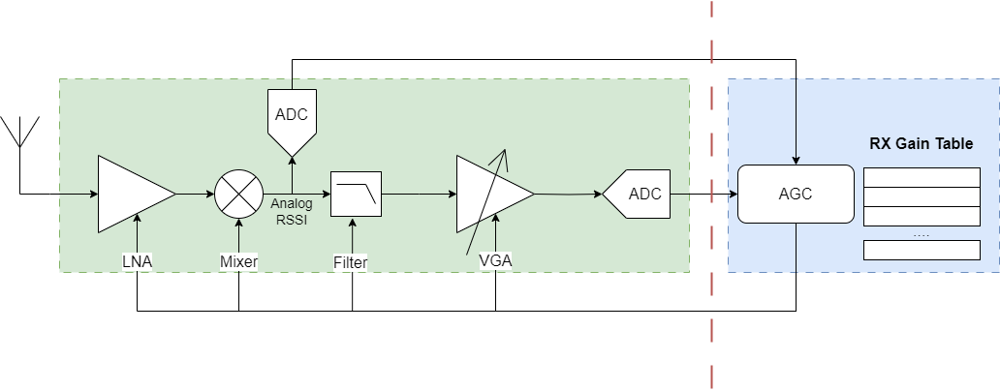

Wifi Rx AGC Introducion
WiFi 接收 AGC 浅析
转载自: WIFI接收AGC浅析
前一篇文章介绍了接收链路的ADC动态范围以及什么样的信号是合适的范围:
如何将信号调整到合适的范围就是 AGC 的工作，AGC 的控制模块在数字部分，需要调整的是接收链路的模拟射频部分的增益，在接收链路中，可以被调整增益的模块一般包括 LNA，MIX，Filter，VGA 等.
各个接收链路模块的增益大小都不一样， 一般来说 LNA 的增益档位相对比较大，比如 6dB 一档，所以整体档位比较少， 而 VGA 模块的增益档位比较小，可以是 1dB 或者 2dB 一档，一般用于细调，整体档位比较多。 同时，增益并不是只有放大功能，有些模块存在负增益，也就是缩小功能，对于大的信号，我们通过负增益将信号缩小，而对于小的信号则通过正增益来进行放大
比较常见的接收链路AGC架构如下：

除了常见的接收链路模块，还会有一个 analog rssi 的检测模块以及将 analog rssi 转换成数字信号的 ADC 模块，通常 analog rssi 检测模块位于接收链路的低频链路位置，也就是经过了 MIX 下变频之后的位置.
数字 AGC 模块得到 analog rssi 的值之后，通过查找 gain table，直接查出各个模块需要设置的gain的大小，然后直接设置到接收链路的各个模块中，在gain table设置准确的情况下基本上可以一次迭代完成整个链路增益的调整.
如果接收链路有block存在，AGC 的 gain table 设计需要有特别的考虑，当大的block出现时，LNA 和 MIX比较容易出现饱和，因为它们是 RF 前端会直接看到所有的block信号，一味降低 LNA 的 gain，noise figure 又会增大，会影响解调 SNR，所以一定要设置合理的 gain，只有这样才能保证实际环境中 AGC 能稳定工作，而数字看到的信号也是稳定的.
一般来说，初始状态下会将接收链路的 gain 设置到最大，目的就是为了能随时检测到比较小的信号，特别是灵敏度附近大小的信号.
总结
-
AGC增益调整的准确性依赖于模拟端给出准确的RSSI值
-
RX Gain Table 的设计在 RF 链路预算时就需要进行考虑
-
针对有block的情况，需要给出不同的 RX Gain Table 设置
-
对于是否存在block，数字端可以通过 inband power 和 outband power 来判断
-
如有必要可以考虑对接收链路的增益进行校准，保证各个档位gain的准确性